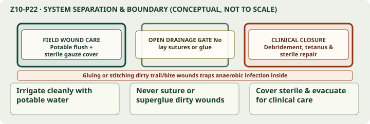

Z10-P22 · Wilderness medicine · New manuscript
Understand why lay responders do not suture or glue dirty backcountry wounds
Prevent trapped deep bacterial infections by leaving wound closure to clinical settings and using clean covered dressings in the field.
When it applies · Gaping lacerations, bite wounds, or contaminated cuts occurring hours away from a clinic.
Equipment · Potable irrigation water, sterile gauze dressings, and rolled bandage.

Actions
- Irrigate accessible superficial lacerations thoroughly with clean potable water, approximate edges only lightly with clean dressings if needed for bleeding control, and arrange clinical evaluation within standard medical windows.[M06, W29]
- Never stitch wounds with improvised sewing needles, staple skin, or seal dirty, jagged, puncture, or animal-bite wounds shut with household superglue—trapping bacteria inside an airtight wound causes severe deep abscess and sepsis.[M06, M12]
- Keep the wound moist-clean under sterile gauze protected from dirt, elevate an injured limb if comfortable, and monitor closely for infection during exit.[M06]
Failure recognition · Sealing a muddy trail laceration or dog bite shut with cyanoacrylate glue in camp, trapping anaerobic bacteria deep beneath the skin.[M06, M12]
Verify · Confirm wound was irrigated with potable water, covered cleanly without improvised closure, and scheduled for prompt clinical review.[M06, ED]
Stop or change course · Gaping wounds, exposed fat/tendon/bone, heavy contamination, facial cuts, or bite wounds require timely professional medical closure and tetanus/antibiotic review.[M06, M12]
Evidence and editorial notes
- M06 · NIH / MedlinePlus · Wounds and Injuries (current web edition)
- Section: Minor Wound Cleaning, Protection, and Infection Red Flags · Conditions: Superficial cuts, scrapes, and abrasions with potable water available
Support: Rinse minor wounds thoroughly with clean potable water, cover with a clean sterile dressing, and monitor for worsening redness, warmth, swelling, pus, red streaks, or fever.
Limitations: Deep punctures, animal bites, retained foreign bodies, or heavily contaminated wounds require clinical evaluation and tetanus review. · Conflicting evidence: None; separates clean potable rinsing from harsh chemical wound scrubbing.
Editorial note: Anchors field wound hygiene and infection escalation cards. · Specialist reviewer: Wilderness medicine and wound care
Primary source · checked 2026-11-24 - M12 · NIH / MedlinePlus · Animal Bites (current web edition)
- Section: Animal Bites, Rabies Exposure, and Wound Infection · Conditions: Wild or domestic mammal bites or scratches breaking skin
Support: Wash bite wounds promptly with soap and clean running water, control bleeding, and obtain prompt medical evaluation for infection risk, tetanus status, and rabies post-exposure assessment.
Limitations: Bat encounters in sleeping areas can cause unrecognized bites requiring public-health rabies consultation. · Conflicting evidence: None; aligns with CDC rabies guidance.
Editorial note: Anchors mammal-bite hygiene and public-health rabies referral. · Specialist reviewer: Infectious disease and emergency medicine
Primary source · checked 2026-11-24 - W29 · CDC · How to Make Water Safe in an Emergency (2024-09-19)
- Section: Use safe water for drinking, brushing teeth and food preparation · Conditions: Applicable emergency-water advice and permissible uses under active local advisory
Support: Use confirmed safe water for oral and food-contact tasks. Follow current local instructions for each use.
Limitations: Infant formula requires separate P26 conditions. Wound care requires the appropriate care source. · Conflicting evidence: See A02 claim audit for boundaries.
Editorial note: Separates potable-required tasks from non-potable utility uses. · Specialist reviewer: Public health and wilderness medicine
Primary source · checked 2026-11-24
Current assessment · A04-W29 (2026-11-25) · Bounded support newly confirmed (A04): Confirms safe water for oral and food-contact uses and the local-advisory boundary. Limits: Specialist review PENDING (Public health and wilderness medicine); publication HOLD. All release decisions pending.
Source lineage · NIH MedlinePlus Wounds; new manuscript · Classification · New manuscript.